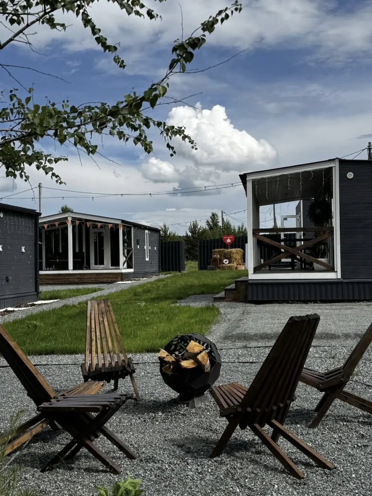
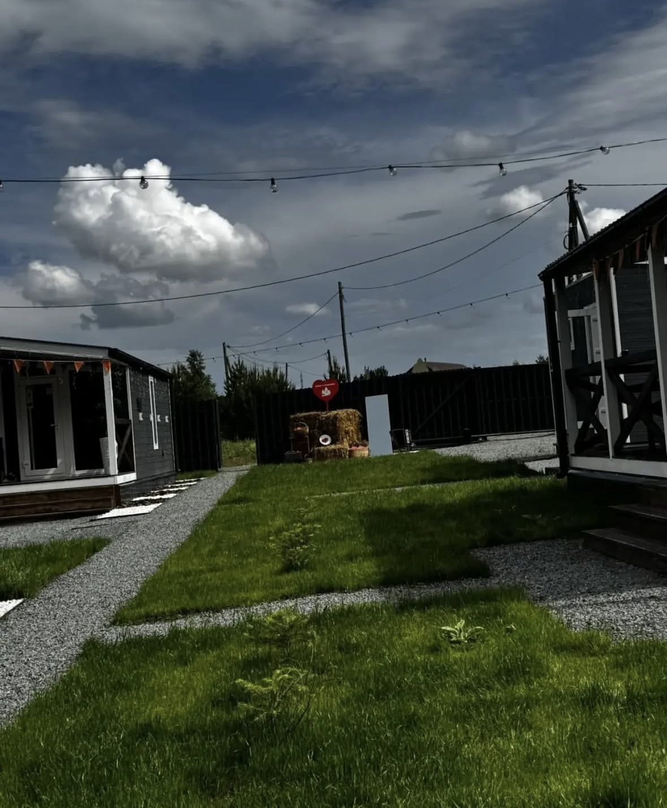
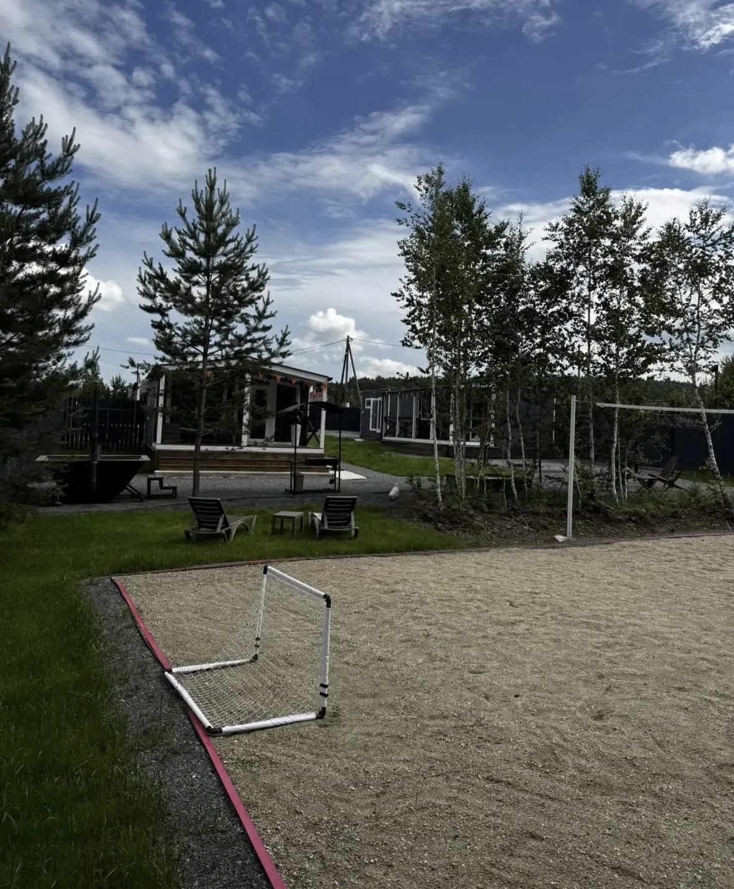
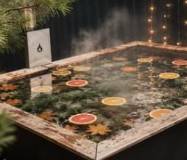
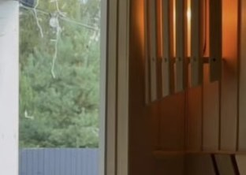
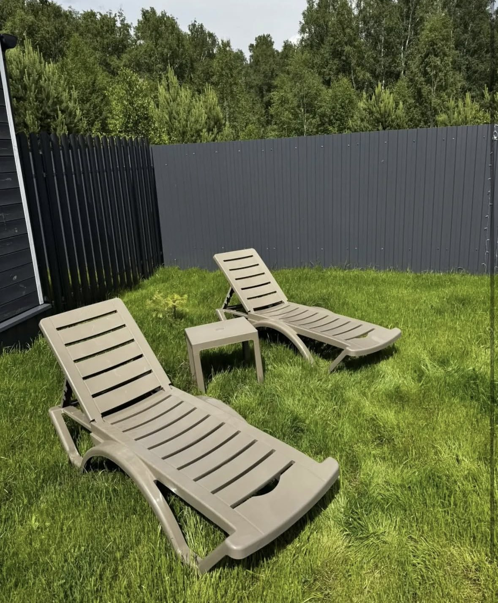

Главное в пяти пунктах
15 минут от города, и это ваш главный довод. Глэмпинги с чаном на Тургояке и Лесном озере стоят в 100–130 км, это полтора-два часа дороги. К вам можно уехать в пятницу после работы.
У каждого дома свой чан. Гостям не нужно делить его с соседями. На сайте это видно сразу, в первом экране.
Сейчас бронь идёт по звонку, и почти каждый разговор начинается одинаково: свободны ли 3 и 4 января, сколько с чаном, на сколько гостей дом. На эти три вопроса сайт отвечает без вас.
Баня одна на два дома. Время приходится сверять вручную, чтобы гости не пересеклись. Календарь бани на сайте зачёркивает занятые часы сам.
Даты с 1 по 10 января обычно разбирают в первой половине декабря. Сайт делается за 7–10 дней, поэтому к пику новогодних броней он уже будет стоять в шапке Instagram.
Что у вас уже сильное
- Близко к городу. «Уютный глэмпинг в 15 мин от Челябинска» прямо в шапке. Для компании, которая решает в четверг, куда поехать на выходные, это часто решает всё.
- Два дома, два чана и панорамная баня. Набор, ради которого едут за город зимой: попариться, выйти в горячий чан под снегом и вернуться в свой дом.
- Алтайская запарка для чана. Зверобой, тысячелистник, ромашка, мелисса, пихта, можжевельник, чёрная смородина и другие травы. На сайте это готовая галочка в расчёте цены.
- Живая территория. Костровая чаша с деревянными креслами, песчаная площадка с воротами, лежаки, гирлянды между домами, подвесное кресло. В постах ещё и прогулки на лошадях.
- Забота о мелочах. Пост «Для уютных вечеров» уже отвечает на вопрос «что взять с собой»: любимые напитки, что-нибудь вкусное к чаю и настольные игры, если хочется свои. Остальное найдётся на месте.
- Ведёте Instagram регулярно. 309 публикаций, 1 668 подписчиков, хайлайтс «спецпредложения», «гости», «активности», «территория» и «баня». Материала на сайт хватит уже сейчас.






Фото из вашего Instagram
Что сейчас мешает
- Чтобы узнать, свободен ли дом, нужно позвонить. Люди выбирают, куда поехать, вечером и в выходные, когда звонить неловко. Часть из них просто открывает агрегатор, где даты видно сразу.
- Цены разбросаны по постам: баня в одном рилс, запарка в другом, акции осени в закрепе. У запарки в одном посте 790 ₽, в закреплённом 890 ₽, и гость не знает, какая цена сейчас. Сложить сумму на компанию он не может, поэтому снова звонит.
- Сколько гостей вмещает каждый дом и чем дома отличаются, я не нашла ни в шапке, ни в закрепах. А это первый вопрос любой компании.
- У поста про новые лежаки стоит геометка «ОЛИМП Фитнес Клуб Челябинск». Кто нажмёт на неё, чтобы построить маршрут, попадёт в фитнес-клуб, а не к вам. Это исправляется за минуту, и на сайте будет точка на Яндекс Картах.
- По запросу «глэмпинг с чаном Челябинск» в поиске стоят агрегаторы с карточками и ценами «от». «Окно в природу» я там не встретила.
Что спрашивают перед бронью
Две группы вопросов, и на обе сайт отвечает до того, как гость наберёт ваш номер.
Даты и цена
Дом и условия
Кто ещё работает в нише
Нашале174
карточка на mirturbaz.ruA-frame и коттеджи у озера, тёплый чан под открытым небом и баня. Есть дом на 10 гостей, за дом берут залог.
Атмосфера
карточка на mirturbaz.ruДома с панорамными окнами на 2 и 4 гостя рядом с рекой Миасс. Чан и баня в описании не указаны.
Ural Glamp
карточка на mirturbaz.ruМини-дома у Лесного озера, у домов банный чан. Цена от 6 500 ₽ за ночь.
Мысли
подборка на glampinginfo.ruПеред каждым домом зона отдыха с баней и сибирским чаном. Ближе всего к вам по набору, но ехать почти два часа.
Описания собраны по карточкам на агрегаторах и поисковой выдаче на 9 ноября 2026. Цены и условия у глэмпингов могли измениться.
Что стало нормой
- Карточка дома с вместимостью и фото
- Цена «от» за ночь
- Чан и баня как часть отдыха
- Бронь через агрегаторы
Чего я у них не встретила
- Свободные даты по каждому дому на своём сайте
- Выбор времени общей бани без пересечений
- Расчёт суммы с чаном, запаркой и вениками
- Свой чан у дома в 15 минутах от города
Что должен делать ваш сайт
Показывать свободные даты
Строка на каждый дом, занятые ночи зачёркнуты. Отмечаете их вы, в пару касаний.
Бронировать время бани
Баня одна на два дома, поэтому занятые часы зачёркиваются сами.
Считать цену на компанию
Дом, ночи, гости, баня, чан, запарка, веники. Свой прайс меняете сами.
Присылать готовую заявку
Всё выбранное плюс имя и телефон одним сообщением туда, где вам удобно.
Продавать Новый год и сертификаты
Новогодние даты, будни дешевле и сертификат в подарок одним блоком.
Отвечать на вопросы и вести к вам
Дети, собаки, что взять с собой, маршрут на Яндекс Картах. Ссылка в шапке Instagram.
Было и стало
Так обычно выглядит путь от первого вопроса до брони, и так он выглядит с сайтом.
Пять минут разговора, а брони пока нет.
Одно сообщение. Остаётся перезвонить и подтвердить бронь.
Что можно предложить вашим гостям
Это варианты на обсуждение, берите то, что подходит.
Сертификат к Новому году
На баню с чаном или на ночь в доме. Покупают в декабре, приезжают в январе и феврале, когда даты свободнее.
Будни дешевле
Отдельная цена с понедельника по четверг. Из города 15 минут, так что можно приехать даже после работы.
Банный вечер одной кнопкой
Баня, чан, алтайская запарка и веники уже собраны в набор. Гость выбирает время, а не пять отдельных пунктов.
Праздник за городом
День рождения или девичник: дом, баня, костровая чаша вечером. Особенно удобно, что ехать недалеко.
Что нужно уточнить
- Сколько гостей вмещает каждый дом и чем дома отличаются?
- Цены: дом в будни и выходные, новогодние даты, баня, чан, запарка, веники.
- Чан входит в стоимость дома или идёт отдельно?
- Баню бронируют на сколько часов и в какое время её можно взять?
- Можно ли с детьми и с животными? Что есть в доме?
- Куда удобнее получать заявки: WhatsApp, Telegram или директ?
- Как берёте предоплату и какие условия отмены?
- Что сейчас в хайлайте «спецпредложения» и есть ли сертификаты?
- Название ИП для политики конфиденциальности.